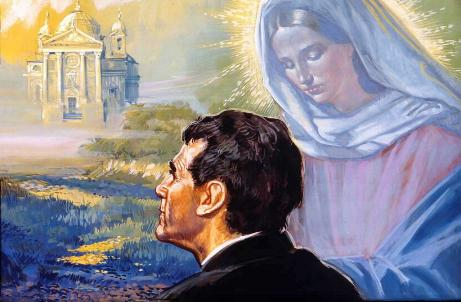
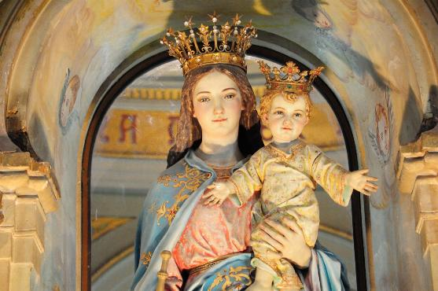

UM NOVO APRENDIZADO
UM NOVO APRENDIZADO
UM SONHO VERDADEIRO
INÍCIO DA HISTÓRIA
Francisco Bosco (Francesco Bosco)
e Margarida (Margherita) Occhiena, de Capriglio, eram pobres e trabalhadores
camponeses da região do Piemonte, na 
Mas o gênio explosivo do irmão não tinha a tranquilidade necessária para conversar e expor argumentos, por que o seu mau humor logo se irritava, ficava exaltado e partia para a agressão. A mãe sempre intervinha, zangava e aconselhava, pedindo paciência e respeito.
João Bosco era um menino bom e cordato, nasceu em Castelnuovo d’Asti no dia 16 de Agosto de 1815, e desde criança, tinha um profundo amor pelos pais, muito embora, o seu pai tenha falecido quando tinha apenas dois anos de idade.
Francisco Bosco possuía uma casa modesta e era um trabalhador dedicado e responsável. Além do trabalho em sua residência, também administrava a propriedade de um vizinho muito rico. Ao anoitecer de um dia do mês de Maio, voltando do trabalho pesado do campo, com o corpo todo molhado de suor, decidiu entrar na adega muito fria do seu patrão. Poucas horas depois foi atacado por uma febre violenta, e como não existia naquela época medicamentos apropriados, pegou uma pneumonia dupla, que o matou em poucos dias. Ele tinha apenas 33 anos de idade, e deixou a esposa Dona Margarida com 29 anos, e os três filhos homens.
Por essa razão, a mãe teve que se desdobrar para criar os filhos, sendo ao mesmo tempo mãe e pai. Dona Margarida era eficiente trabalhadora em todas as áreas: cozinhava e lavava os pratos, arrumava os quartos e limpava a casa, manejava a foice com habilidade, semeava o trigo e na colheita, cortava, trilhava e guardava; também cuidava do parreiral, colhia as uvas e fazia o vinho; isto, além de ser uma conselheira incansável que sempre buscava harmonizar a convivência familiar, sobretudo, se preocupando com a oração. Ensinou os seus filhos a rezar desde cedo, e a conhecer JESUS e NOSSA SENHORA. À noite reunia a família em torno da pequena lareira e todos juntos, rezavam o Terço.
DEUS estava presente na família de Dona Margarida. Ela sempre dizia: “Agradeçamos a DEUS, ELE sempre foi bom para nós. Dá-nos o pão de cada dia”. Quando o temporal ou a chuva de pedra estragavam tudo, a mãe convidava os filhos a refletir: “DEUS nos deu, DEUS nos tirou. ELE sempre sabe o que é melhor para nós”. Assim, verdadeiramente a mãe Dona Margarida confiava em DEUS, de modo ilimitado, indiscutível. O SENHOR é o Pai bondoso que dava tudo o que eles necessitavam e às vezes permitia coisas difíceis de entender: como a morte do marido Francisco, a chuva de pedras na plantação de uvas... Mas DEUS sabe o porquê de tudo, e isso era e é, o bastante, no pensamento e no coração dela.
UM SONHO MARAVILHOSO
Aos nove anos de idade João Bosco teve um sonho que profundamente ficou gravado em sua mente. O próprio Dom Bosco descreve o seu inesquecível e misterioso sonho:
- “Parecia que eu estava perto da casa dos meus pais, num lugar bastante espaçoso, onde brincavam muitos meninos. Alguns riam e muitos blasfemavam. Ao ouvir as blasfêmias me lancei no meio deles, tentando com socos e palavras fazê-los calar. Nesse momento apareceu um homem muito bem vestido, cujo aspecto impunha respeito. Seu rosto era tão luminoso que eu não conseguia fixá-lo. Chamou-me pelo nome e disse:"
- “Não com pancadas. Mas com mansidão e caridade é que você deverá ganhar esses seus amigos. Comece logo a instruí-los sobre a feiúra do pecado e a preciosidade da virtude.”
- “Confuso e assustado, respondi que eu era um menino pobre e ignorante”. E naquele mesmo instante, os meninos parando de brigar e gritar rodeou o homem que estava falando. Então, sem saber o que dizia, perguntei: Quem é o Senhor que me manda fazer coisas impossíveis?”
Ele respondeu:
- “Justamente porque parecem impossíveis é que você deve torná-las possíveis de serem realizadas, obedecendo e aprendendo”.
- “Como poderei aprender?”
- “Você terá uma Mestra. Com a orientação Dela poderá se tornar sábio.”
- “Mas, quem é o Senhor?”
- “EU Sou FILHO Daquela que sua mãe o ensinou a saudar três vezes ao dia. Quer saber o Meu Nome? Pergunte a Minha MÃE.”
- “Nesse momento vi a Seu lado uma Senhora muito bonita, usando um manto que brilhava como o sol. Percebendo que eu estava confuso, pediu que me aproximasse, e com bondade me pegou pela mão e disse:”
- “Olhe!”
- “Olhando, percebi que os meninos tinham fugido e havia ali um bando de cabritos, cães, gatos, ursos e outros animais”.
- “Eis o seu campo! É ai que você deverá trabalhar. Torne-se humilde, forte e robusto. E você fará por meus filhos o que agora está vendo acontecer com os animais.”
- “Olhei outra vez e, no lugar de animais ferozes, apareceram mansos cordeirinhos que, saltitando e balindo, corriam ao redor do homem e da senhora, fazendo festa para eles. Nesse ponto, sempre sonhando, comecei a chorar e pedi àquela Senhora que explicasse, porque não sabia o que Ela queria dizer. Então a Senhora colocou a mão na minha cabeça e disse:”
- “Você compreenderá quando chegar o momento”.
- “Depois dessas palavras um ruído me acordou. E tudo desapareceu. Fiquei transtornado. Minhas mãos pareciam doloridas por causa dos socos que dei, e meu rosto parecia estar queimando, por causa das tapas que levei.”
ERA HORA DE ESTUDAR
Foi também quando tinha 9 anos de idade que João começou a estudar. As aulas iniciavam no dia 3 de Novembro e terminavam no dia 25 de Março, no período que os camponeses chamavam de “estação morta”, porque era o período do inverno, e não se podia trabalhar no campo.
A Escola municipal de Castelnuovo d'Asti ficava a 5 quilômetros de distância. Por isso, o seu primeiro professor foi um camponês que sabia ler. Depois tia Mariana, irmã da mãe dele e empregada do Padre-Mestre de Capriglio, pediu a ele ao Padre Lacqua, um lugar para o sobrinho e o sacerdote concordou. Provavelmente João ficou morando com a tia vários meses. E logo que ele aprendeu a ler, os livros se tornaram uma paixão na sua vida.
O PREGADOR
A lembrança daquele sonho não saía da mente dele. E Joãozinho viu no sonho muitos meninos e lhe foi ordenado que lhes fizesse o bem. “Não com pancadas, mas com mansidão”. E a Senhora que lhe apareceu predisse: “Há seu tempo você compreenderá tudo”. Ele pensou, mas porque não começar a fazer o bem desde agora? Meninos eu já conheço diversos: os colegas das brincadeiras, os empregados e trabalhadores dos sítios da região, os quais, alguns são gente boa e outros são grosseiros... Então ele teve uma idéia: nas noites de inverno, muitas famílias se reuniam num grande estábulo, onde também estavam bois e vacas. Enquanto as mulheres fiavam e os homens fumavam cachimbo, João começou a entreter o pessoal lendo para eles os livros que o Padre Lacqua lhe emprestava, e todos, sem exceção, gostavam mais das histórias do livro: “Os Pares da França”. E a frequência ao estábulo cresceu de maneira admirável, todos afluíam interessadamente na companhia dos colegas de Joãozinho. Eram pessoas de todas as idades, todos queriam ouvir aquelas histórias fabulosas que focalizavam as Aventuras de Carlos Magno e seus paladinos. E aqui, se faz necessário e muito importante realçar, conforme escreveu Dom Bosco em suas memórias:
- “Antes e depois das minhas histórias, todos fazíamos o Sinal da Cruz e rezávamos uma Ave Maria”.
UM NOVO APRENDIZADO
Passado o tempo do inverno, o trabalho chamava todas as pessoas à produção necessária a existência de cada um, por isso mesmo, os “clientes” de Joãozinho ficavam escassos. Então, na sua genialidade, interiormente começou a imaginar outra maneira de atuar, para continuar “fazendo o bem”. Ele jamais pensou em cobrar algum dinheiro em suas apresentações. O que ele almejava e ficava feliz era pedir ao povo que tivesse um sincero interesse amoroso por DEUS e que protegessem as crianças pobres.
Aprendeu a fazer mágicas, inclusive os truques que os artistas usavam, e também, aprendeu a ser equilibrista. Foram muitas aulas que demandaram um longo tempo. Isto porque trabalhando junto com seus irmãos a fim de atender as necessidades da família, para o aprendizado de mágico, só dispunha do tempo que o trabalho lhe permitia.
PRIMEIRA COMUNHÃO
No dia 26 de Março de 1826, na Celebração da Páscoa do SENHOR, Joãozinho com 11 anos de idade, depois de devidamente preparado na Catequese, no Confessionário alcançou o perdão dos seus pecados, através do Sacramento da Confissão e depois, na Santa Missa, recebeu a Sagrada Comunhão, em companhia de um grupo de crianças. Ele se sentia com uma felicidade imensa no coração. Não se afastava de junto da sua mãe e colhia atenciosamente os seus preciosos e carinhosos conselhos: “Hoje foi um grande dia para você, meu filho, DEUS tomou posse do seu coração. Agora LHE prometa fazer tudo o que puder para ser bom até o fim da sua vida. No futuro, receba com frequência a Sagrada Eucaristia. Na Confissão, diga sempre tudo ao sacerdote, não esconda nada. Seja sempre obediente e pelo amor de DEUS, fuja das más companhias”.
MÁGICO E MALABARISTA
Numa tarde de domingo, em pleno verão, João anunciou aos seus amigos o seu primeiro espetáculo. Sobre um tapete de sacos estendidos na relva, fez “milagres” de equilíbrio com canecas e caçarolas suspensas na extremidade do seu nariz. Mandou uma criança abrir a boca e tirou dela dezenas de bolinhas coloridas. Com destreza, trabalhava com a varinha mágica exercitando todos os “truques” que conseguiu aprender. Caminhou equilibrando sobre uma corda, sendo freneticamente aplaudido pelos seus amigos. As pessoas ficaram surpreendidas ao vê-lo tirar do nariz grande de um camponês uma notável quantidade de moedas, de transformar água em vinho, multiplicar ovos, abrir a bolsa de uma mulher e tirar um pombo. Todos riem e aplaudem com muita alegria.
A notícia se espalha. Todo o mundo quer ver o “novo mágico”. O público aumenta cada vez mais: há gente grande e pequena, meninos e meninas. São os mesmos que frequentavam o estábulo na época do inverno e muitas pessoas curiosas.
Antes do final da apresentação, ele tirava o terço do bolso e se ajoelhava, convidando todos a rezar. Ou, às vezes, repetia o sermão que ouviu na Igreja na parte da manhã. Esse era o pagamento que pedia ao público, rezar e ouvir o sermão, isto, tanto para os pequenos como para as pessoas adultas.
IRMÃO BRONCO, IGNORANTE E NERVOSO
A vida na residência seguia o ritmo habitual, com muito trabalho em casa e no campo. Á noite, todos estão à mesa para o jantar. Antonio ao ver João com o seu inseparável livro ao lado do prato não resistia, ficava sempre criticando e colocando defeitos no irmão.
A mãe Dona Margarida, para colocar uma “trava no assunto” recordava o que tinha sido combinado entre eles, e foi dizendo:
- “João trabalha igual a todos. Se depois do trabalho ele quer ler o seu livro, o que você tem com isso?”
Antonio com sua grossura, deu uma resposta agressiva a sua mãe, afirmando que era ele quem dava duro no campo e sustentava a casa, e que não queria sustentar nenhum "senhorzinho", referindo-se ao seu irmão. E depois acrescentou com voz elevada:
- “Vou dar um fim a essa gramática. Eu cresci forte e gordo, e nunca peguei num livro. Ainda jogo esse livro no fogo!”
Joãozinho reagiu firme com as palavras que chegaram a sua mente:
- “Pois é! O nosso burro também nunca foi á Escola e é mais gordo que você!”
Antonio não deu conversa, foi logo descendo o braço no João, forçando a mãe num gesto rápido, a separar com energia, os dois brigões.
A verdade é que João com seus 12 anos deve ter apanhado mais do que das outras vezes, por que ele não tinha condições de competir com o seu irmão Antonio com 19 anos de idade, e muito mais forte.
À noite Joãozinho chorou muito em seu quarto, talvez mais de raiva da covardia de seu irmão Antonio, do que de dor. No quarto ao lado, sua mãe também chorou muito e certamente não conseguiu dormir.
Pela manhã Margarida tinha uma decisão, difícil de ser falada, mas necessária em face dos fatos que se repetiam com frequência e que verdadeiramente não podiam continuar:
- “Olhe, Joãozinho, é melhor que você deixe esta casa. Antonio não pode mais vê-lo. Um dia poderá até machucá-lo.”
- “E para onde que eu vou, mamãe?”
João sentiu vontade até de morrer, Dona Margarida também. Mas alguma providência tinha que ser tomada. Ela então explicou, que algumas famílias da região de Moriondo e também de Moncucco, a conheciam e poderiam lhe dar algum trabalho. E assim, naquele mesmo dia, pela manhã, preparou a sua pequena bagagem e ele partiu.
EM BUSCA DE TRABALHO
João procurou trabalho nas famílias que sua mãe indicou, mas ninguém tinha serviço para meninos. Ele não perdeu as esperanças, foi atrás de um senhor chamado Luís Moglia, agricultor. Mas o senhor Luís não precisava de mais funcionários naquela época e mandou que ele voltasse para a casa, porque também era muito pequeno.
João não aguentou mais, já tinha passado por maus momentos nas diversas casas que visitou. Sentou no chão e implorou: “Me aceite, por favor,” e chorando permaneceu de cabeça baixa, enquanto a família do senhor Luís, a esposa Dorotéia e a filha Teresa de 15 anos, trocavam idéias a respeito dele.
Os Moglias eram uma família de ricos camponeses, embora todos trabalhassem muito, de sol a sol. Mas, por fim, decidiram que Joãozinho ficaria. Foi assim que em Fevereiro de 1827 ele começou a trabalhar no estábulo da propriedade dos conhecidos da sua mãe.
OS MOGLIAS SATISFEITOS COM JOÃOZINHO
Depois de quase três semanas, Luís e a esposa Dorotéia comentavam que estavam gostando do menino João, pois se mostrava responsável e trabalhava com seriedade e dedicação. Sua tarefa era cuidar da estrebaria. Na verdade era um serviço pesado para uma criança de 12 anos. Mas ele não fazia o trabalho sozinho, pois estava sob o cuidado do vaqueiro, que era o feitor da propriedade, que naturalmente ordenava para ele os serviços, que um menino da idade dele pode fazer.
Nos momentos de descanso, ou após as refeições, Joãozinho pegava os livros que Padre Lacqua lhe emprestou e lia fervorosamente, cheio de atenção e de prazer.
Também à noite, durante a oração, João demonstrou ser um menino excelente. Tanto que a senhora Dorotéia algumas vezes o convidou a puxar a reza do Terço.
Nos finais de semana, pedia licença aos Moglia e cedinho caminhava para Moncucco, onde se confessava com o Pároco Padre Cottino e recebia a Sagrada Comunhão durante a Santa Missa.
E assim, ele permaneceu quase três anos na casa dos Moglias, de Fevereiro de 1827 a Novembro de 1829.

O TITIO MIGUEL
A permanência de João na casa dos Moglias era um afiado espinho no coração de Dona Margarida, mãe dele. E por isso mesmo, numa oportunidade em Novembro de 1829, ela desabafou com seu irmão Miguel. Ele, triste e penalizado com os fatos ocorridos e querendo ajudar, foi conversar com o sobrinho João. Encontrou-o na propriedade dos Moglias, tocando as vacas do estábulo.
Depois das alegrias do encontro, tio Miguel lhe perguntou com seriedade:
- “Então, Joãozinho, você gosta ou não gosta daqui?”
- “Tio, na verdade não gosto, embora seja tratado muito bem por todos e pessoalmente eu gosto deles e também tenho amizade por todos. Mas o que eu quero mesmo é estudar, e aqui eu não posso. Já fiz 14 anos de idade e estou parado no mesmo lugar.”
- “Então, recolha os animais no estábulo e volte para a casa da sua mãe em Becchi. Lá eu me encontrarei com você. Agora vou conversar com os seus patrões e depois preciso ir ao mercado em Chieri. À noite estarei com você.”
João fez a trouxa e se despediu de todos, pois tinha construído uma sólida amizade com os Moglias. Em seguida, seguiu para Becchi.
Sua mãe vendo-o chegar correu a seu encontro e lhe pediu:
- “Antonio está em casa. Se esconda até o seu tio Miguel chegar”.
O tio chegou bem à noite e levou o Joãozinho para dentro de casa tremendo de tanto frio. Houve tensão, mas não guerra. Antonio já com 21 anos de idade, estava noivo e preparando para se casar, por essa razão, ali mesmo, todos juntos, ele ouviu o tio Miguel garantir que os estudos e a manutenção do Joãozinho seriam por conta dele, e por isso, ele não fez objeções.
MISSIONÁRIOS FAZEM PREGAÇÃO EM BUTTIGLIERA
No final de Novembro, sabendo da presença dos missionários na cidade próxima de Buttigliera, Joãozinho foi participar da Santa Missa e ouvir a pregação. Na volta, pela estrada, se encontrou com o Padre Colosso, que ficou admirado com a presença daquele menino, e perguntou:
- “De onde você é meu filho?”
- “De Becchi. Vim ouvir a pregação dos Padres Missionários.”
Como os Padres Missionários fizeram muitas citações em latim, Padre Colosso lhe perguntou:
- “Você entendeu o sermão com todas aquelas citações em latim?”
- “Sim Padre, entendi, porque minha mãe tem o hábito de fazer bons sermões e por isso, entendi os missionários”.
- “Mas será mesmo? Bem, vamos ver: se você me disser algumas palavras do sermão de hoje, vou lhe dar quatro moedas”.
Tranquilo, João repetiu todo o sermão dos missionários, direitinho, sem nenhum erro, como se estivesse lendo um livro.
Padre Colosso ficou admirado, mas escondeu a emoção e perguntou:
- “Como é o seu nome?”
- “João Bosco. Meu pai morreu quando eu era criança”.
- “E aonde foi a Escola?”
- “Aprendi a ler e a escrever com Padre Lacqua, em Capriglio. Gostaria de continuar os estudos, mas meu irmão mais velho não me ajuda de jeito nenhum. Os Párocos de Castelnuovo e de Buttigliera não tem tempo para me ajudar”.
- “E para que você gostaria de estudar?”
- “Para ser Padre”.
- “Diga a sua mãe que vá a Murialdo falar comigo. Quem sabe se a gente, apesar de velho (Padre Colosso estava com 80 anos de idade e os cabelos grisalhos) não pode dar uma ajuda?”
No dia seguinte, Dona Margarida sentada à mesa do Padre Colosso, ouviu-o dizer:
- “Seu filho é um prodígio de memória. Deve começar a estudar logo, sem perda de tempo. Estou velho, mas tudo quanto puder fazer, eu farei para ajudá-lo”.
Ficou combinado que João estudaria com o Capelão Padre Colosso, não muito longe de Becchi. Voltaria para a casa somente para dormir. E nos momentos de maior aperto nos trabalhos do campo, ele iria ajudar como sempre fez.
Assim, de uma maneira misteriosa, João conseguiu de repente o que lhe faltou por tanto tempo: acolhimento paterno, segurança e esperança.
E por isso mesmo, aplicou-se aos estudos com muita dedicação e fervor.